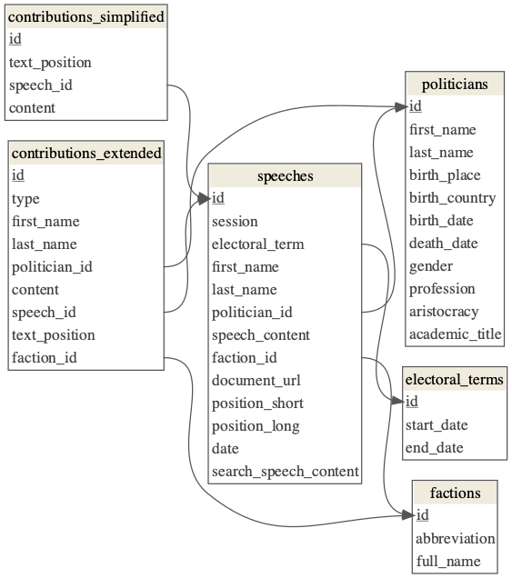

Open Discourse - Documentation
2021-03-21
1 Prerequisites
This is the official documentation space of the Open Discourse corpus.
Currently you can find detailed documentation about these topics:
- [Get the Data]
- [Data Report of the Database]
| ::: {.infobox .caution} Citing Open Discourse |
| If you want to cite the Open Discourse corpus, please cite the resource by referring to the associated data paper published at the Harvard Dataverse as: |
| > Richter, F.; Koch, P.; Franke, O.; Kraus, J.; Kuruc, F.; Thiem, A.; Högerl, J.; Heine, S.; Schöps, K., 2020, "Open Discourse", https://doi.org/10.7910/DVN/FIKIBO, Harvard Dataverse ::: |
| # Get the Data |
| There are three ways to retrieve the complete data of the Open Discourse corpus: |
| - [Download a data dump] |
| - [Run the database locally] |
| - [Recreate the database locally] |
| ## Download a data dump |
| The associated Harvard Dataverse of Open Discourse hosts full exports of the database in four different formats. You can easily download the data in your preferred data format and use it for your projects. |
| The following data formats are available: |
| - CSV/Tab (Universal) |
| - Pickle (Python) |
| - RDS (R) |
| - Feather (R & Python) |
| The dataverse hosts all database tables in these four formats (see Section ?? for a full documentation on the database tables). |
| The following widget provides direct access to the data files in the dataverse: |
{=html} <script src="https://dataverse.harvard.edu/resources/js/widgets.js?persistentId=doi:10.7910/DVN/FIKIBO&dvUrl=https://dataverse.harvard.edu&widget=iframe&heightPx=500"></script> ## Run the database locally |
| You can download and run a docker image of the Postgres database. The docker image contains the latest version of the database. |
| ### Get and launch the database |
| Three steps are necessary to run the database on your machine: |
| 1. Authenticate to GitHub Container Registry |
| Click here for a detailed documentation on how to get and use your personal access token. |
| 2. Pull the docker container |
| After you are authenticated run the following command from your terminal: |
bash docker pull docker.pkg.github.com/open-discourse/open-discourse/database:latest |
| 3. Run the database |
| Finally you just need to start the docker container with the database: |
bash docker run --env POSTGRES_USER=postgres --env POSTGRES_DB=postgres --env POSTGRES_PASSWORD=postgres -p 5432:5432 -d docker.pkg.github.com/open-discourse/open-discourse/database |
| You need to pass on some environment variables, to login to the database locally: |
| | variable | value | |-------------------------|----------| | --env POSTGRES_USER | postgres | | --env POSTGRES_DB | postgres | | --env POSTGRES_PASSWORD | postgres | |
| ### Use the database |
After these steps are done, the database is running locally on port 5432. You can access the database by using a database tool (e.g. DBeaver) or by using your preferred programming language. |
| Use following credentials to log in to your database: |
| | variable | value | |-------------|-----------| | db_name | next | | host_db | localhost | | db_port | 5432 | | db_user | postgres | | db_password | postgres | |
| ### Code examples |
R Code |
| ```r library("RPostgreSQL") |
| # db_connection ----------------------------------------------------------- db <- "next" host_db <- "localhost" db_port <- "5432" db_user <- "postgres" db_password <- "postgres" con <- dbConnect( RPostgres::Postgres(), dbname = db, host = host_db, port = db_port, user = db_user, password = db_password ) |
| # get data tables --------------------------------------------------------- speeches <- dbGetQuery(con, "SELECT * FROM open_discourse.speeches;") ``` |
Python Code |
| ```python import psycopg2 import pandas as pd |
| con_details = { "host" : "localhost", "database" : "next", "user" : "postgres", "password" : "postgres", "port" : "5432" } con = psycopg2.connect(**con_details) speeches = pd.read_sql_query("select * from open_discours.speeches", con) ``` |
| ## Recreate the database locally |
| Also, you can checkout our GitHub repository and recreate the database from scratch on your local machine or any other instance you want to run the database on. This procedure is the most time consuming way to access the data. The recreation of the database from scratch includes downloading all raw plenary protocols from the website fo the German Bundestag, the full processing procedure of these files and the creation of the postgres database. |
| Please find a documentation on how our repository is structured and how to run it locally in the README files in our repository. |
| # Data Report of the Database |
| This data report serves the purpose of documenting the variables and their linkages of the Open Discourse corpus. This report is supplementary to a soon to be published data paper. |
| The Open Discourse Corpus consists of five main tables. This report provides information about the contents of these tables and the meaning of the respective variables. A detailed documentation about the procedures used to provide this corpus can be found in aforementioned data paper soon. |
| Furthermore the codebase developed and used to create the corpus can be retrieved from GitHub. This open source codebase can be used to recreate the database from scratch and to contribute to the repository to further improve the quality of the data. |
| A current data dump can be found at the associated Dataverse. Also, a full text search engine for researching the corpus can be found on the Open Discourse Website (currently only available in German). |
| ## Database Schema |
|  |
| ::: {.infobox .caution} NOTICE! |
The text_position variables in contributions_extended and contributions_simplified are positional identifiers. These identifiers link the contribution to their exact location inside the speechContent variable. Hence the text_position variable can be used to reassemble the original speech with all interjections that happened during the speech. ::: |